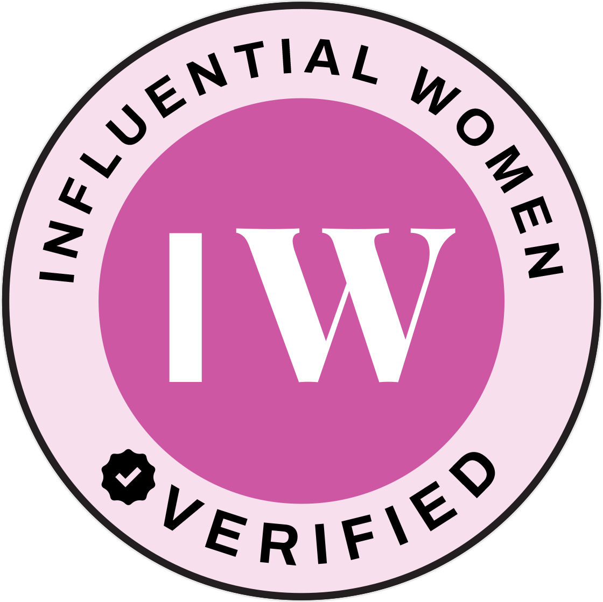

01
Business integration
Aligning acquired teams, data, workflows, users, and reporting inside a shared operating environment.
- Acquisition integration
- Operating models
- Roadmaps
Global business integration & operations
I connect teams, technology, data, workflows, and executive priorities—bringing structure to fast-moving organizations and clarity to the people leading them.

Featured in Influential WomenRead my profile & interviewStrategy only scales when the operating system underneath it holds.
Operating point of view
Growth creates complexity. Acquisitions add systems. Teams create workarounds. Reporting fragments. Decisions slow down.
I came up through the layer where strategy meets execution: translating ambiguous business needs into workflows, governance, reporting, adoption, and accountable cross-functional work. That perspective lets me see both the executive question and the operational machinery required to answer it.
What I bring
A combination of analytical thinking, hands-on systems depth, executive communication, and practical change leadership.
Aligning acquired teams, data, workflows, users, and reporting inside a shared operating environment.
Turning business requirements into practical processes, platform architecture, automation, and governance.
Building reporting frameworks that make pipeline, performance, risk, and next actions easier to understand.
Connecting leaders and teams across revenue, technology, operations, and customer-facing functions.
Selected work
Representative work shown at the level appropriate for public review. Client confidentiality preserved.
A growing healthcare consulting environment needed newly acquired businesses brought into an established CRM and reporting structure.
Supported the alignment of acquired data, users, processes, lifecycle definitions, and reporting requirements with the existing operating model.
Created a more consistent foundation for governance, visibility, and cross-business coordination as the organization expanded.
Leadership teams needed clearer insight across fragmented lifecycle, pipeline, attribution, and customer data.
Translated operating questions into lifecycle architecture, reporting logic, dashboards, and shared definitions across $100M+ in aggregate pipeline environments.
Improved the reliability and usability of revenue information for planning, prioritization, and executive conversations.
Sales, marketing, customer success, and operations teams were working through inconsistent handoffs and disconnected processes.
Mapped current and future states, designed automation and routing, clarified ownership, and built enablement around the new workflows.
Reduced operational ambiguity and gave teams a more scalable, repeatable way to move work and information across functions.
Complex platform environments required cleaner standards, stronger stewardship, and better day-to-day adoption.
Served as a platform steward in data-governance work and trained 200+ users across business, operations, leadership, and customer-facing roles.
Strengthened data consistency, reporting confidence, and the operational discipline required for systems to deliver long-term value.
Leadership progression
From systems delivery to enterprise leadership
My progression at Pyxis Growth Partners reflects a widening scope: from building systems, to shaping transformations, to owning strategic relationships and long-term business value.
Consultant
Built the foundationCRM implementation · migration · trainingSenior Consultant
Led the transformationArchitecture · governance · executive alignmentStrategic Account Manager
Own the long-term outcomeRoadmaps · relationships · adoption · growthRange without losing rigor
The industries change. The operating questions stay familiar: How should work move? Who owns the decision? Can leaders trust the data? Will the system scale?
Where I create the most value
Business-unit and acquisition integration
Executive dashboards and KPI frameworks
Cross-functional operating workflows
Process, policy, and SOP development
Complex program and stakeholder coordination
Data governance and change adoption
The next operating challenge
I’m focused on building scalable business integrations, revenue systems, and global operating models that improve how organizations grow and execute.
Start a conversation